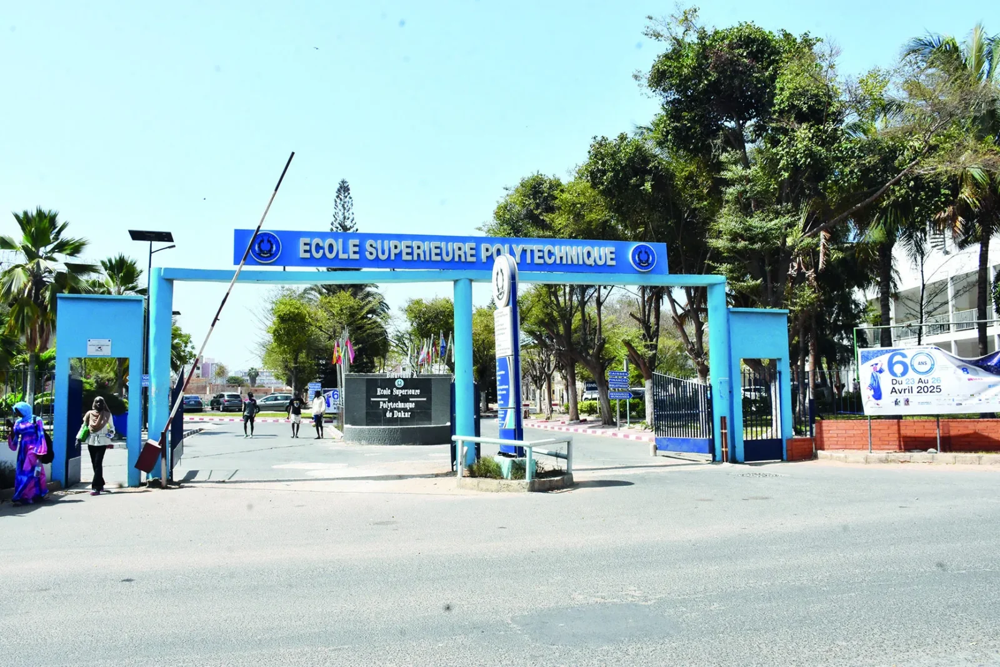
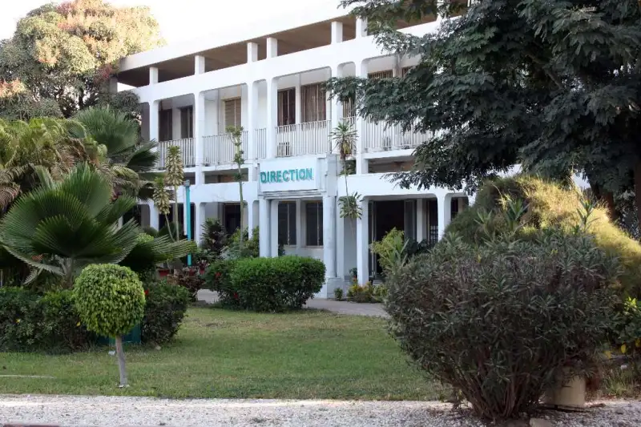

On le surnomme le temple du savoir,je vous presente l'ecole superieure polytechnique (ESP) de Dakar,un etablissement d'exellence ou j'ai suivi une formation en informatique pendant cinq ans.AU terme de ce parcours,j'ai obtenu un dipolome d'ingenieur en securite des systemes d'informations.
Au cours de cette formation,jai developpe de solides competences techniques et Proffessionnels,notamment dans les domaines suivants:
- Cybersecurite
- securite des reseaux
- administrations des systemes linux
- Developpement web et logiciel
- Vielle technologique
- Gestion de bases de donnees
- Cryptographie
- Tests d'intruision(pentesting)
Parcours et experiences
Experiences Proffessionnelles:
2025-2026
Stagiaire
stage a la Sonatel en developpement web
2024
Createur - Ndiagoush_tech
createur du site Ndiagoush_tech et de tutoriels videos concernant les langages de programmation.
parcours scolaire:
2020-2024
Dic en SSI
Obtention de mon diplome d'imgenieurie et de conception en securite des systemes d'information.
2019-2020
Bac S2
Obtention de mon baccalaureat en sciences experimentales.